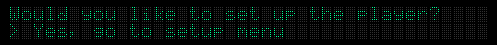
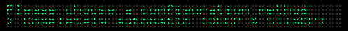
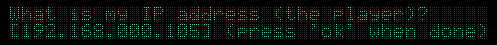
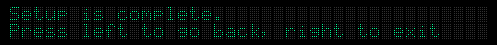

Setting up your Squeezebox or Transporter for your network is much the same as setting up a computer on a network. You will need to know the following information:
When the player is first powered up, it will ask you if you want to change the network settings.
Use the up and down buttons to select an option. You can choose either to go to the setup menu, or to skip setup and use the previous settings. Press down once to choose "Yes, go to setup menu", and then press right.
There are three choices here:
To use DHCP, simply choose "Completely automatic", then press right. The player will ask you to confirm your choice. Press right again to acknowledge. That's it. The player will take a second or two to locate your DHCP server, and then you will be connected.
To configure the player using static IP addresses, choose "Enter everything manually". This will take you to a series of four screens, where you can enter the IP address of the player, your netmask, your router's address, and the IP address of your server. To enter the addresses, use the left and right buttons to select the digit to edit, and up/down to change that digit. Press "ok" to go the next screen (the 'ok' button is just below and to the right of the arrow buttons).
When you've finished entering all off the addresses, you will see the following message. At this point, you can either press left to bo back and review your changes, or press right to save the changes and exit the setup menu.
 [% PROCESS helpfooter.html %]